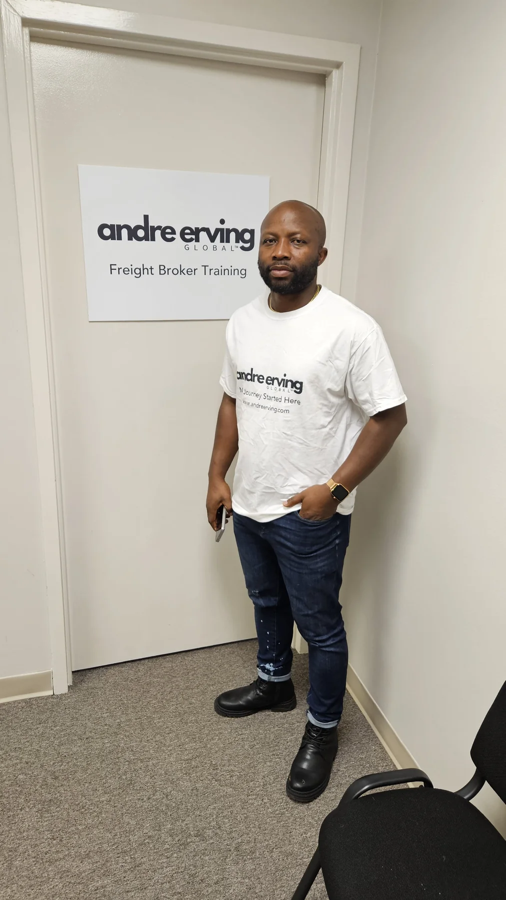
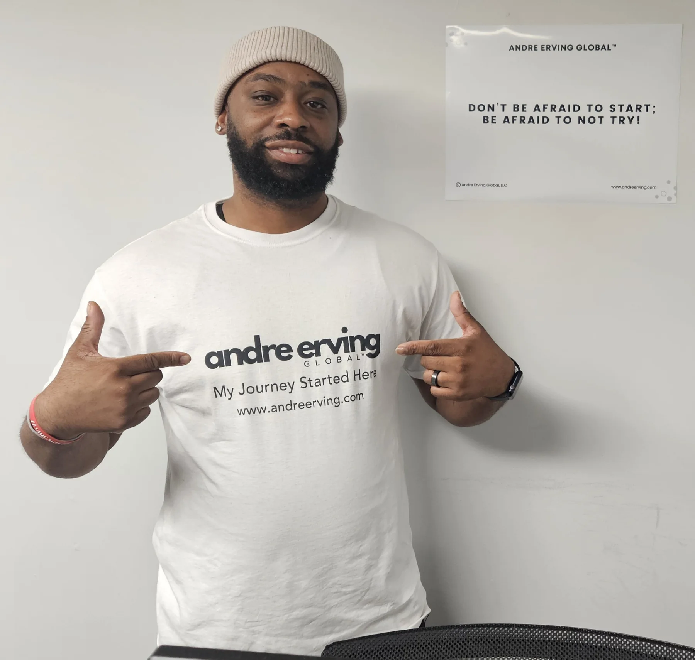
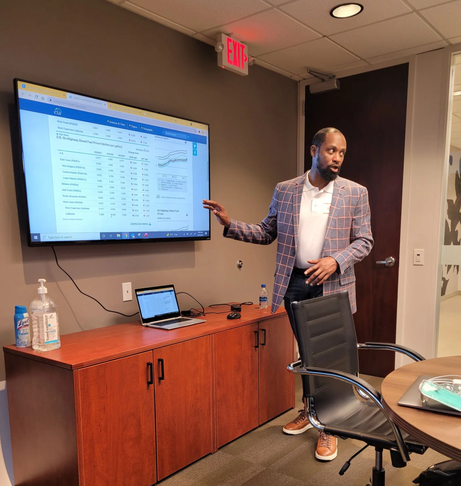
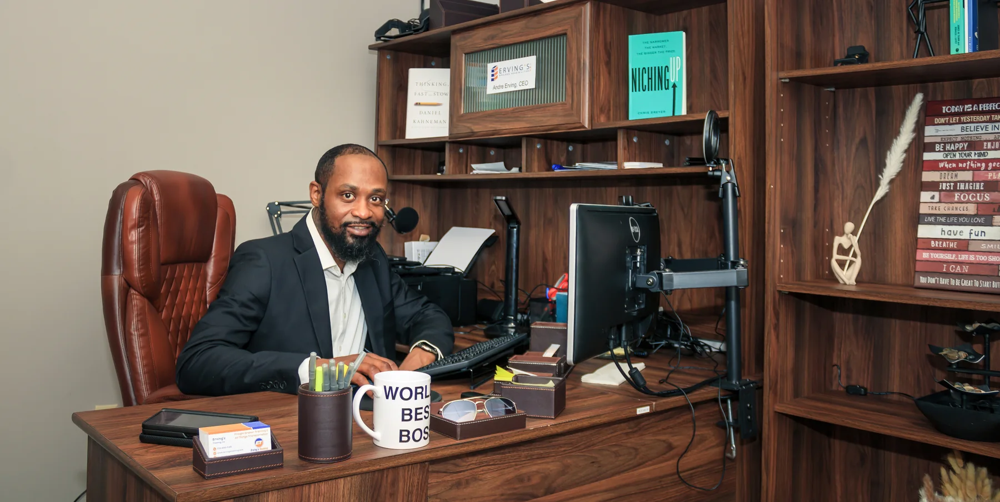
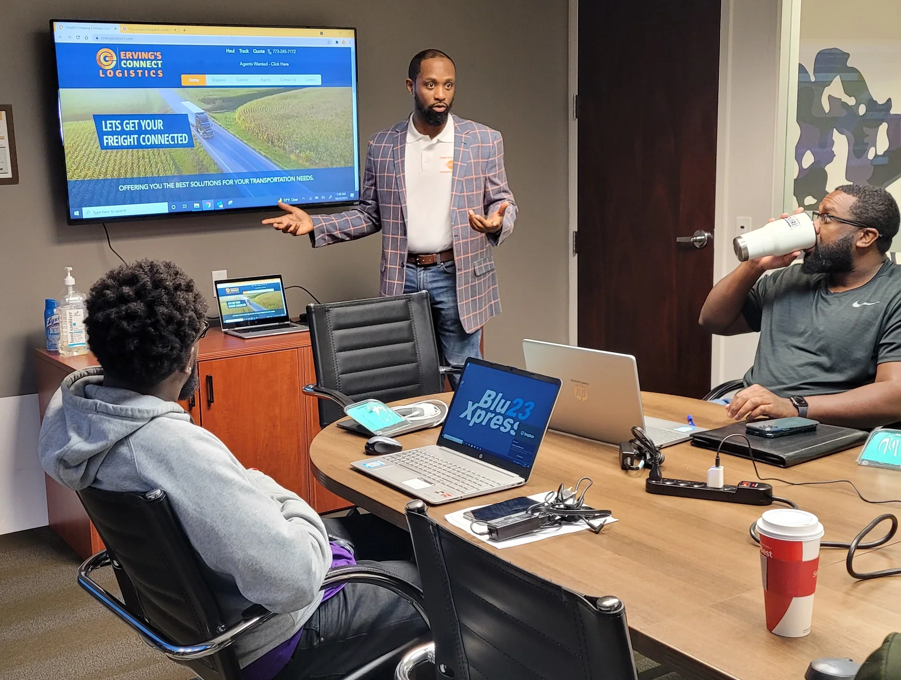

Blog
Ideas for the work and the person doing it.
Transportation, business, leadership, professional development, and personal growth—organized around practical questions.
All PostsFreight BrokerTransportationBusinessLeadershipPersonal DevelopmentProfessional Development

Business / Transportation
Freight Brokerage Startup Steps: Your Guide to Launching a Successful Business
Feb 26 · 4 min read
Read article →
Personal Development
Effective Strategies for Personal Growth Techniques
Feb 23 · 5 min read
Read article →Professional Development
Peak Performance Strategies: Achieving Peak Performance in Life
Feb 6 · 4 min read
Read article →
Personal Development
Prioritizing My Tasks: A Journey to Productivity
Feb 6 · 5 min read
Read article →
Personal Development
The Power of Change: Transforming Your Life by Choice
Feb 3 · 5 min read
Read article →
Transportation
Success in the Trucking Industry: An In-Depth Look at the Trucking Pro Online Course
Jan 27 · 5 min read
Read article →
Start A Business
Understanding Freight Brokering: What Every New Broker Needs to Know
Jan 22 · 6 min read
Read article →